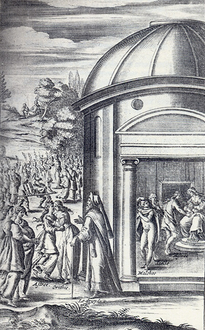
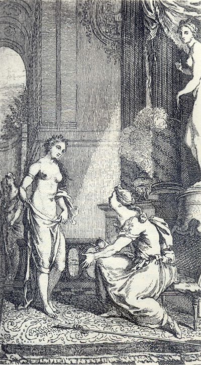

L'Astrée
d'Honoré d'Urfé
Première partie
Livre 4

Dans le temple, le Jugement de Pâris : Malthée, Stelle et Astrée devant Orithie
(I, 4, 89 verso)
À l'extérieur, Orithie embrassant Astrée devant un druide (I, 4, 91 recto)
Plus loin Astrée portée en triomphe dans une chaire (I, 4, 91 recto)
Au fond, peut-être, Céladon demandant pardon à Astrée (I, 4, 93 recto)
L'AstréeI, 4. Édition Vaganay**, 1925Dans le temple, le Jugement de Pâris : Malthée, Stelle et Astrée devant Orithie
(I, 4, 89 verso)
À l'extérieur, Orithie embrassant Astrée devant un druide (I, 4, 91 recto)
Plus loin Astrée portée en triomphe dans une chaire (I, 4, 91 recto)
Au fond, peut-être, Céladon demandant pardon à Astrée (I, 4, 93 recto)
(Voir Illustrations)

Orithie et Astrée devant une statue de Vénus qui n'est pas dans le roman (I, 4, 90 verso)
L'AstréeI, 4. Édition Vaganay**, 1925Orithie et Astrée devant une statue de Vénus qui n'est pas dans le roman (I, 4, 90 verso)
(Voir Illustrations)
Édition de 1607, 77 recto.
Édition de Vaganay, p. 101.
plaire que pour être courte, et s'étant toutes trois assises en rond, elle reprit la parole de cette sorte :
CHANSON
* Encore que pleins de feintises,
Veulent-ils bien se parjurer ?
Ils m'ont dit souvent que son cœur
Quitterait enfin sa rigueur,
Accordant à ce faux langage
Le reste de son beau visage.
Mais quoi ? Les beaux yeux des Bergères
* Se trouveront aussi trompeurs
Que des cours les attraits pipeurs ?
Donc ces beautés bocagères,
Quoique sans fard dessus le front,
Dedans le cœur se farderont,
Et n'apprendront en leurs écoles,
Qu'à ne donner que des paroles ?
* C'est assez, il est temps, la Belle,
De finir cette cruauté,
Et croyez que toute beauté
Qui n'a la douceur avec elle,
C'est un œil qui n'a point de jour,
Et qu'une belle sans Amour,
Comme indigne de cette flamme,
Ressemble un corps qui n'a point d'âme.
Ma sœur, interrompit Phillis, je me ressouviens fort bien de ce que vous dites, et faut que je vous fasse rire de la façon dont il parlait à moi, car le plus souvent ce n'étaient que des mots tant interrompus qu'il eût fallu deviner pour les entendre, et d'ordinaire quand il me voulait nommer, il avait tant accoutumé
STANCES
Sur une résolution de ne plus aimer
* Quand je vis ces beaux yeux, nos superbes vainqueurs,
Soudain je m'y soumis comme aux Rois de nos cœurs,
Pensant que la rigueur en dût être bannie ;
Mais depuis éprouvant leur dure cruauté,
Je crus qu'éterniser en nous leur Tyrannie,
Ce n'était pas Amour, mais plutôt lâcheté.
* Il est vrai que c'est d'eux, dont naissent tous les jours
Aux moindres de leurs traits quelques nouveaux Amours,
* Mais à quoi sert cela si comme de sa source
L'eau soudain qu'elle y naît incontinent s'enfuit ?
De même aussi l'Amour, d'une soudaine course,
S'enfuit loin de ces yeux, quoiqu'il en soit produit.
À son exemple aussi fuyons-les ces beaux yeux,
Fuyons-les, et croyons que c'est pour notre mieux.
Et quand ils nous voudraient faire quelque poursuite,
N'attendons point leurs coups n'y pouvant résister,
Car il vaut beaucoup mieux se sauver à la fuite,
Que d'attendre la mort qu'on peut bien éviter.
QU'IL NE DOIT POINT
espérer d'être aimé
avec moi, lui donna une lettre que son frère lui écrivait par mon conseil.
Si je ne vous ai toujours aimée, que jamais ne sois-je
aimé de personne, et si mon affection a jamais changé,
que jamais le malheur où je suis ne se change. Il
est vrai que depuis quelque temps j'ai plus caché
d'Amour dans le cœur que je n'en ai laissé
paraître en mes yeux ni en mes paroles. Si j'ai failli en cela, accusez-en le respect que je vous
porte qui m'a ordonné d'en user ainsi. Que si vous
ne croyez le serment que je vous en fais, tirez-en
telle preuve que vous voudrez de moi, et vous
connaîtrez que vous m'avez mieux acquis que je ne
sais vous en assurer par mes véritables, mais trop
impuissantes paroles.
Hier nous allâmes au Temple, où nous fûmes
assemblés pour assister aux honneurs qu'on fait à
Pan et à Syrinx en leur chômant ce jour :
j'eusse dit festoyant si vous y eussiez été, mais
l'amitié que je vous porte est telle que ni même
les choses divines, s'il m'est permis de le dire
ainsi, sans vous ne me peuvent plaire. Je me trouve
tant incommodée de nos communs importuns que sans la
promesse que j'ai faite de vous écrire tous les
jours, je ne sais si aujourd'hui vous eussiez eu de
mes nouvelles. Recevez-les donc pour ce coup de ma
promesse.
Quand Alcippe eut lu cette lettre, il la remit au même lieu, et se cachant pour voir la réponse, son fils ne tarda pas d'y venir, et ne se trouvant point de papier récrivit sur le dos de ma lettre, et m'a dit depuis que la sienne était telle :
Vous m'obligez et désobligez en même temps ; pardon,
si ce mot vous offense. Quand vous me dites que vous
m'aimez, puis-je avoir quelque plus grande obligation
à tous les Dieux ? Mais l'offense n'est pas petite
quand cette fois vous ne m'écrivez que pour me l'avoir promis, car je dois ce bien à votre promesse
et non pas à votre amitié. Ressouvenez-vous, je vous
supplie, que je ne suis pas à vous parce que je le
vous ai promis, mais parce que véritablement je suis
vôtre, et que de même je ne veux pas des lettres
pour les conditions qui sont entre nous ; mais pour
le seul témoignage de votre bonne volonté, ne les
chérissant pas pour être marchandées, mais * pour m'être envoyées d'une entière et parfaite affection.
Que la vôtre m'aille vengeant :
Qu'elle feigne de vous aimer,
Seulement pour vous enflammer.
Ainsi pressé de sa tristesse,
Un Amant trahi se plaignait,
Quand on lui dit que sa Maîtresse
Pour un autre le dédaignait.
Et le Ciel tonnant
η par pitié
Promit venger son amitié.
Ou tu devais soudain mourir,
Ou bien incontinent guérir.
lui mettre, en courant après quelque loup qui était venu passer auprès de nos troupeaux, je la laissai tomber si malheureusement pour moi, que Semire, qui venait après, la releva, et vit qu'elle était telle :
Depuis qu'il eût trouvé cette lettre, il fit dessein de ne me parler plus d'Amour qu'il ne m'eût mise mal avec Céladon, et commença de cette sorte. En premier lieu il me supplia
Sonnet
QU'IL CONNAÎT
QU'ON FEINT DE
* l'aimer
Madrigal
SUR LA RESSEMBLANCE
DE SA DAME
et de lui
* Je puis bien dire que nos cœurs
Sont tous deux faits de roche dure,
Le mien résistant aux rigueurs,
Et le vôtre, puisqu'il endure
Les coups d'amour et de mes pleurs.
Mais considérant les douleurs
Dont j'éternise ma souffrance,
Je dis en cette extrémité :
Je suis un rocher en constance,
Et vous l'êtes en cruauté.

Livre 3

Livre 5
Référence électronique :
document.write('"'+document.title.substr(0, document.title.indexOf("-")-1)+'". '+"Dernière mise à jour : "+ExtractDate(document.lastModified)+".")Deux visages de L'Astrée.
©2005-2020 E. Henein.
URL :
var today = new Date();
document.write(document.URL +
"<br>Consulté le : " + today.toLocaleDateString("fr-FR") + ".");
var _gaq = _gaq || [];
_gaq.push(['_setAccount', 'UA-19288475-1']);
_gaq.push(['_trackPageview']);
(function() {
var ga = document.createElement('script'); ga.type = 'text/javascript'; ga.async = true;
ga.src = ('https:' == document.location.protocol ? 'https://ssl' : 'http://www') + '.google-analytics.com/ga.js';
var s = document.getElementsByTagName('script')[0]; s.parentNode.insertBefore(ga, s);
})();
Deux visages de L'Astrée.
©2005-2019 Eglal Henein. Creative Commons 4 
Édition critique de la première partie de L'Astrée (1607, 1621)
mise en ligne le 9 avril 2007
Édition critique de la deuxième partie de L'Astrée (1610, 1621)
mise en ligne le 10 octobre 2010
Édition critique de la troisième partie de L'Astrée (1619, 1621)
mise en ligne le 1er novembre 2014
Édition critique de la quatrième partie de L'Astrée (1624)
mise en ligne le 15 janvier 2019
document.write("Dernière mise à jour : "+ExtractDate(document.lastModified))